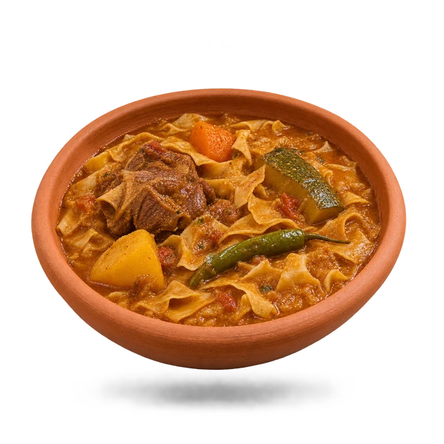
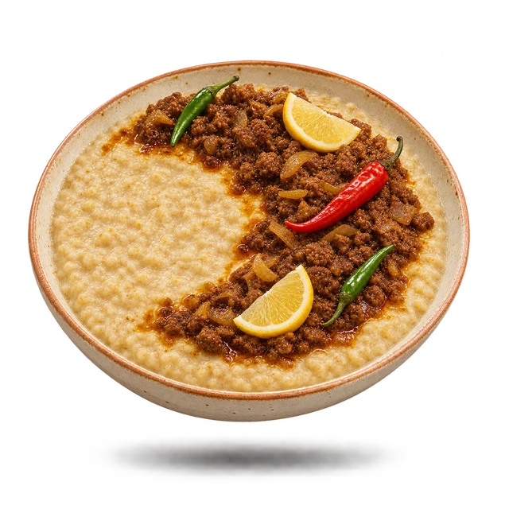
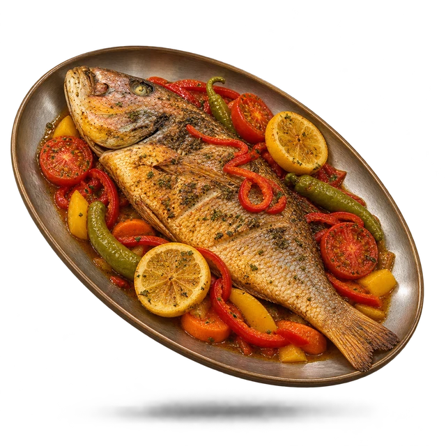

أكلات جدتنا
أكلات جدتناطبخ البيت على أصوله،
من أسرة قريبة
أسر منتجة تُراجَع مستنداتها. شوف أطباقها وأسعارها، واتفق معها مباشرة.

متوفر الآناطلبها مسبقًا
كل أسرة تُراجَع مستنداتها قبل الظهور.
أسر تطبخ قريب منك


